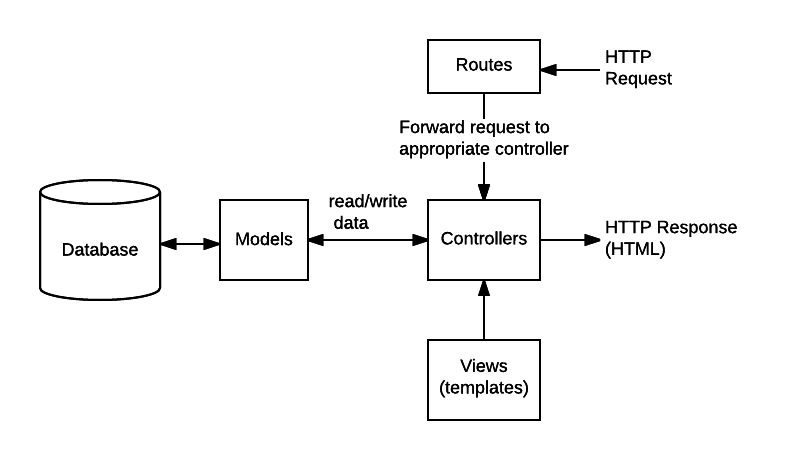

Estructura de las aplicaciones (MVC)#
El framework Express no require un estructura de proyecto predefinida, las aplicaciones se pueden organizar de distintas maneras. Sin emabargo, existe un patrón de diseño de aplicaciones que es muy utilizado y se suele implementar con una estructura de directorios con nombres específicos dentro de los proyectos.
El patrón de diseño se llama Model View Controller (MVC) y consiste en separar las partes de la aplicación que manejan las estructuras de datos, los modelo, de las que muestran los resultados al usuario, las vistas. Ambas interactúan por medio de un middleware que actúa como controlador, y de ahí el nombre. No vamos a estudiar la teoría de este modelo pero la vamos a utilizar.

Imagen obtenida de aquí.
De este patrón de diseño, con los nombres que se ven en la imagen, deriva una estructura de directorios que se usa para almacenar los archivos que corresponden a cada una de las partes del diseño MVC más las rutas.
proyecto/
controller/
model/
routes/
view
app.js
...
El directorio más fácil de entender es routes. Consiste en los enrutadores express.Router modularizados como vimos anteriormente.
Luego vendría el directorio controller, los controladores son, en nuestra aplicación express, los callbacks de los enrutadores. Son las funciones que van a procesar los datos de la petición, van a ir a buscar los datos a la base de datos y van a renderizar las páginas web por medio de plantillas. En principio, no vamos a separa los controladores en funciones aparte, pero tengan en cuenta que es posible que lo vean así en muchas partes que usen esta convención o alguna variación. Esto es así porque en aplicaciones más complejas es conveniente modularizar al máximo la estructura para que sea más fácil cambiar cada parte.
El directorio model contiene los modelos relacionales de objetos (ORM por Object-Relational Model en inglés) que interactúan con la base de datos. Estos modelos mapean las estructuras y tipos de datos de los lenguajes de programación, por ejemplo los diccionarios en JavaScript, a las estructuras que emplean los genstores de bases de datos, RDMS (Relational Database Management System en inglés), y sus consultas. Los ORM se implementan con librerías que soportan distintos tipos y marcas de bases de datos (drivers) y proveen una API para el lenguaje de programación que se esté usando. Una de las librerías ORM más usadas es Sequelize junto con el driver de la base de datos MySQL mysql2. Dicho está para que los sepan, pero no vamos a usar una librería ORM porque vamos a hacer las consultas directamente con SQL. Sin embargo, estas librerías son muy importantes para trabajar en todo sitios web porque sipmlifican la programación a la vez que garantizan la integridad de los datos, lo que mitiga muchos problemas de seguridad.
Por último está el directorio view que contiene las estructuras que se encargan de la parte visual de nuestra apicación. Para las páginas web las “vistas”, que son las páginas HTML, se generan con un sistema plantilas. Las plantillas son estructuras de páginas HTML, o partes de estas, que están predefinidas y a las cuales se les pueden cambiar distintos parámetros por medio de la programación. Este es el mecanismo que se usa para genera páginas web dinámicas que cambian según los datos del cliente. Express cuenta con varios sistemas de plantillas, el que vamos a utilizar se llama ejs.
Note
Documentación MDN: https://developer.mozilla.org/en-US/docs/Learn/Server-side/Express_Nodejs/routes
Creando la estructura del proyecto#
Comandos npm y directorios:
npm init -y
npm i express better-sqlite3
npm i nodemon -D
Crear el archivo
app.js.Crear los directorios
database,routesyview.
La estructura queda de la siguiente manera:
proyecto
node_modules
database # Scripts para la base de datos.
routes # Scripts para las rutas (index y user).
view # Scripts para las plantillas.
app.js # El archivo de la aplicación renombrado a 'app' para que no se confunda con la ruta 'index' que ahora ponemos a parte.
package-lock.json
package.json
El archivo package.json luego de editar la sección de scripts de ejecución, "start" y "dev", y cambiar el nombre de la sección "main" a "app.js" tiene que haber quedado de la siguiente manera (la versión de las librerías puede diferir):
{
"name": "proyecto",
"version": "1.0.0",
"description": "",
"main": "app.js",
"scripts": {
"start": "node app.js",
"dev": "nodemon app.js"
},
"keywords": [],
"author": "",
"license": "ISC",
"dependencies": {
"better-sqlite3": "^8.6.0",
"express": "^4.18.2"
},
"devDependencies": {
"nodemon": "^3.0.1"
}
}
Dentro de la carpeta database, más adelante, vamos a poner el módulo JavaScript que hace las consultas y el script que genera la base de datos.
Dentro de la carpeta routes vamos a crear un módulo para cada ruta, por ejemplo '/', '/home/*', '/user/*' con los objetos express.Router. Aquí es donde van a estar los controladores que van a ser muy simples, por eso no vamos a utilizar otro directorios para ellos.
Dentro de la carpeta view, más adelante, vamos a poner las plantillas que vamos a llamar desde los scripts de los módulos de cada ruta.
Dentro de las carpetas routes y view vamos a poner los scripts que vamos a nombrar según el nombre del documento html que estemos creando, por ejemplo routes/index.js, view/index.ejs.
Al módulo de la base de datos database/db.js los vamos a utilizar dentro de los módulos de los enrutadores, los scripts de la carpeta /routes.
Al script principal lo vamos a llamar app.js para que no se confunda con la página index que va a estar en la ruta raíz /. Desde este script es que vamos a montar los enrutadores que son los que se encargan de la base de datos y las plantillas. En app.js solo vamos a dejar la configuración de la aplicación servidor y el middleware a nivel de aplicación.
Entonces, cuando vayamos armando el proyecto nos va a quedar la siguiente estructura, sin mostrar los archivos de configuración o las librerías de node e inventando algunos nombres de archivo que luego agregaremos:
database
create_users.sql
db.js
routes
index.js
user.js
view
footer.ejs
header.ejs
index.ejs
user.ejs
app.js
Hasta el momento solo trabajamos con el archivo app.js, que antes llamábamos index.js, y con el archivo databas/db.js que utilizamos para la base de datos. Aún tenemos que pulir, pero ya vimos cómo tenemos que hacer para modularizar las rutas en scripts dentro de /routes.